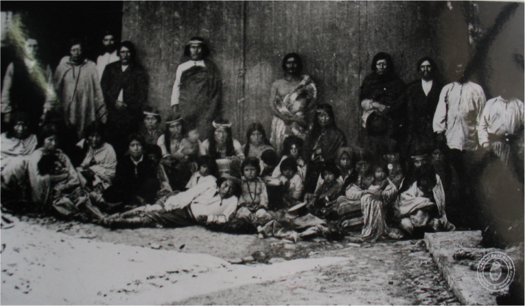

entendiendo desde dónde

Descubrí estos mágicos lugares para tu próxima visita
Nuestro pueblo fue mutando y formándose a lo largo del tiempo, por la convivencia con otras culturas. Todas estas raíces nos influenciaron y contribuyeron a nuestra presente identidad. A lo largo de la historia nos fueron llamando de distintas formas, según quién hablaba, Tehuelches, Patagones, Aonikenks...
Más tarde, entre los 4000 y 3000 años a. C., aparece la industria Casapedrense, caracterizada por una mayor proporción de instrumentos líticos confeccionados sobre láminas, probablemente como una muestra de la especialización en la caza del guanaco, lo patrones muy similares de tecnología, dieta y modelos de vivienda de los tehuelches. Debieron ser alrededor de 4000 a 5000 individuos, que se dividían en grupos nómades no superiores a 100, dedicados a la caza del guanaco y ñandú, así como a la recolección de productos litorales. Utilizaban el arco y la flecha y las boleadoras.
Desde ese momento y hasta la llegada de los europeos (inicios del siglo XVI) los tehuelches poseían un modo de vida cazador-recolector en el que hacían uso de una movilidad estacional, desplazándose en pos de las manadas de guanacos; durante los inviernos se encontraban en las zonas bajas (vegas, mallines, costas, orillas de los lagos, etc.) y durante el verano ascendían a las mesetas centrales de la Patagonia o a la cordillera de los Andes en donde tenían entre otros sitios sagrados el cerro Chaltén.
Vestigios industria Toldense
En efecto, aún antes de encontrarse personalmente con ellos, aquellos exploradores quedaron asombrados por las huellas de sus pies. Ampliadas por las pieles que les servían de calzado, pies de suyo mucho más grandes que los de los europeos de entonces (para el siglo XVI la talla media de los europeos era mucho más baja que la actual) El promedio de altura europeo hasta 1800 rondaba los 1,50 mts, los patagones llegaban a medir 2 m y a veces más. De estructura craneal dolicocéfala como otros pámpidos, llegaron a ser famosos en la literatura europea de los siglos XVI a XIX por su gran estatura y fuerza física. Corresponde tener muy en cuenta que entre los siglos XVI a XVIII el topónimo “Patagonia” era dado a todo el territorio desde el sur del estuario del río de la Plata. Esto refuerza la hipótesis de antropólogos como Rodolfo Casamiquela, según la cual los het de Falkner eran también patagones.
La llegada de los españoles implicó un conjunto de cambios en la cultura de los pueblos originarios y los tehuelches no fueron ajenos a eso; se desataron entre ellos pestes (sarampión, viruela, gripe) que los diezmaron, particularmente a los septentrionales gennakenk.
Aparición del caballo
En estas ferias, llamadas "ferias de los ponchos" por los jesuitas de la época que las registraron, se intercambiaban diversos tipos de productos: desde productos ganaderos y de la agricultura hasta vestimentas, como ponchos. Es así como, a partir de estos movimientos de personas para el intercambio de productos se produjo cierto intercambio cultural entre distintos pueblos que habitaban desde la pampa húmeda, pasando por la Patagonia septentrional y hasta la zona inmediata a la cordillera de Los Andes (tanto en su margen oriental como occidental) hasta la costa del océano Pacífico. Este es el comienzo del intercambio cultural y los movimientos migratorios, entre los distintos pueblos entre los cuales cabe mencionar a los tehuelches, los ranqueles y los mapuches.
La influencia mapuche tiene su origen en lo anteriormente mencionado, ya que partiendo de fines de comercio y alianzas, se terminó produciendo una gran influencia cultural sobre los tehuelches y otros pueblos, al punto que se la denomina "mapuchización" o "araucanización" de las Pampas y la Patagonia. Buena parte de los tehuelches y de los ranqueles adoptaron muchas de las costumbres y el idioma mapuche, mientras los mapuches adoptaban parte del modo de vida tehuelche y con ello se difuminaron las diferencias entre ambos grupos.
Los caciques Cacapol y su hijo Cangapol, durante la primera mitad del siglo XVIII fueron los jefes más importantes de la región, que se extendía desde la Cordillera de los Andes hasta el océano Atlántico y desde el río Negro hasta el río Salado. Cangapol tenía su sede de gobierno en la zona de Sierra de la Ventana, se los conocía como ”pampas serranos”. Los pampas supieron aliarse con los mapuches del oeste para atacar la campaña bonaerense en 1740.
Cambios y adaptación de los Tehuelches
Para algunos historiadores argentinos se trató de una invasión en que los mapuches casi extinguieron a los tehuelches septentrionales por medio de la violencia, pero el consenso académico actual es que se trató de un fenómeno más complejo. Esta supuesta invasión mapuche ha sido usada políticamente para negar legitimidad a las reclamaciones indígenas en el sur argentino, al argumentarse que se trataría de peticiones hechas por descendientes de los "invasores chilenos" y no por descendientes de los habitantes originarios, aun cuando para entonces no existían los Estados chileno y argentino.
Los tehuelches al sur del Río Negro tuvieron como soberana a una mujer: María la Grande.
Su sucesor Casimiro Biguá fue el primer jefe tehuelche que realizó tratados con el gobierno argentino. Sus hijos, los caciques Papón y Mulato, terminaron en una reserva al sur de Chile.
Los tehuelches tuvieron que convivir con los inmigrantes galeses que desde la segunda mitad de siglo XIX comenzaron a colonizar Chubut: en general las relaciones fueron armónicas entre ambos pueblos. En 1869 el cacique Biguá reconoció la necesidad de defender a los galeses ante un posible ataque del cacique Calfucurá.

Tehuelches en Río Gallegos, archivo 1824
Al igual que los amerindios de las grandes praderas de Norteamérica, los tehuelches también trabajaron las estepas de matorrales de la Patagonia, viviendo principalmente del guanaco y de la carne de rhea (ñandú o choique), seguida de la carne de huemul, venado, mara e incluso puma y jaguar, además de ciertas plantas (pues aunque tardíamente, aprendieron a cultivar la tierra). En cuanto a peces y mariscos, existían en ciertos casos tabúes: algunos grupos tenían, por ejemplo, prohibido el consumo de pescados. Sus grupos solían estar constituidos por entre 50 a 100 miembros.
La adopción del caballo significó una profunda revolución social en la cultura tehuelche: la movilidad que les deparó alteró las ancestrales territoralidades y modificó en gran medida el patrón de los desplazamientos, si antes del siglo XVII predominaban las trashumancias este-oeste en pos de los guanacos, a partir del complejo ecuestre tomaron gran importancia los desplazamientos longitudinales (de sur a norte y viceversa) estableciéndose extensos circuitos de intercambio: a mediados del siglo XIX los aonikenk trocaban sus pieles y moluscos por cholilas (frutillas, zarzamoras, calafates, semillas de pehuén, llao llao, brotes y cogollos de coligüe, etc.) y manzanas a los gennakenk del Neuquén, del Alto Valle del Río Negro y del llamado País de las Frutillas o Chulilaw (región delimitada aproximadamente al norte por el lago Nahuel Huapi, al este por las cordilleras bajas y morrénicas llamadas Patagónides, al oeste por las altas cumbres de los Andes y al sur por el lago Buenos Aires.
El caballo, o más exactamente la yegua, pasó a ser parte principalísima de su dieta, dejando en segundo lugar a los guanacos. Los selknam de Tierra del Fuego en cambio no dieron en desarrollar un complejo ecuestre comparable.
Tehuelche ojeando a los guanacos
La familia de la cual se conocen más datos concretos fue la de un jefe llamado Pitioche, quien fue capturado junto a su mujer e hijo. Parte de estos dramáticos hechos forman parte del libro Zoológicos humanos de Christian Báez y Peter Mason.
Tehuelches en Río Gallegos, archivo 1824
Tehuelches en Río Gallegos, archivo 1824